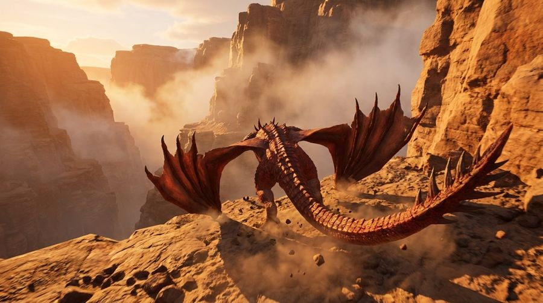

WBench 怎么打：题目、按键、提交，一页看完
题库公开、免费、MIT 协议，不用申请。我们按键模型打 Navi 榜（158 题）；Full 榜（289 题）官方只收文字模型。
自己生成 158 个视频 → 放网盘 → 发邮件。不交权重、不开 API。
私有仓库 oricter/wbench-data（289 题 + 289 张首帧图）
git clone https://github.com/oricter/wbench-data.git /Users/oricter/Desktop/code/Agent/wbench-data
1. 题目长什么样
- 每题 = 1 张首帧图 + 场景/角色/视角的英文描述 + 2–9 轮操作
- 每轮 固定 4 秒，按住一个键（或组合键）或执行一句文字
- 首帧图多数 1376×768；官方示例视频 24fps；分辨率没硬性要求
- 所有轮拼成一个视频：
case_<id>_combined.mp4
| 榜 | 题数 | 轮数 | 谁能交 |
|---|---|---|---|
| Navi | 158 | 601 个导航轮（+少量文字轮） | 文字 / 相机 / 按键 ✅我们 |
| Full | 289 | 1,058（导航 601 · 角色动作 213 · 事件 183 · 视角切换 61） | 官方写只收文字模型 |
第一人称 178 题 · 第三人称 111 题。第三人称里 WASD = 角色走，方向键 = 镜头绕角色转。
2. 按键对照（我们全都能做）
| 官方 | 意思 | 我们 | 出现轮数 |
|---|---|---|---|
| W / S / A / D | 前 / 后 / 左移 / 右移 | W / S / A / D | 150 / 72 / 72 / 61 |
| left / right | 左转 / 右转 | J / L | 73 / 92 |
| up / down | 抬头 / 低头 | I / K | 21 / 17 |
| W+A, W+D, S+D | 斜着走 | 同时按两个移动键 | 4 / 2 / 3 |
| W+up/down/left/right | 边走边转 | 同时按 W 和 I/K/J/L ⚠️ | 12 / 10 / 6 / 6 |
| 角色动作/事件/视角切换 | 一句英文 | 文字指令 | Navi 里只有 9 题 |
34 轮要「移动键 + 视角键同时按」，我们模型支不支持？不支持的话这几轮会丢分。
转多快不用对齐官方：轨迹分会归一化尺度，主要看方向对不对。
3. 真题示例
A straight two-lane desert highway stretching to the horizon in the American Southwest. Sandy brown terrain with sparse desert scrub and saguaro cacti on both sides. Dramatic red-orange sandstone mesas and buttes rise in the background. A rusty brown mile mark…
| 轮 | 官方写法 | 我们怎么按 | 时长 |
|---|---|---|---|
| 第1轮 | W+A | W + A | 4 秒 |
| 第2轮 | W+A | W + A | 4 秒 |
| 第3轮 | S+D | S + D | 4 秒 |
| 第4轮 | S+D | S + D | 4 秒 |
A grand neoclassical museum gallery interior. Polished marble floor with subtle veining stretches down a long hall. Tall grey marble columns with Corinthian capitals line both sides. Large oil paintings in ornate gold frames hang on the walls. White marble scu…
| 轮 | 官方写法 | 我们怎么按 | 时长 |
|---|---|---|---|
| 第1轮 | left | J | 4 秒 |
| 第2轮 | left | J | 4 秒 |
| 第3轮 | right | L | 4 秒 |
| 第4轮 | right | L | 4 秒 |
An East African savanna at sunset. A dusty red-earth trail runs through golden-brown grassland. To the left, a shallow watering hole with muddy brown water reflects the orange sky; a small group of dark animals drink at its edge. Scattered flat-topped acacia t…
| 轮 | 官方写法 | 我们怎么按 | 时长 |
|---|---|---|---|
| 第1轮 | W | W | 4 秒 |
| 第2轮 | A | A | 4 秒 |
| 第3轮 | A | A | 4 秒 |
| 第4轮 | D | D | 4 秒 |
| 第5轮 | D | D | 4 秒 |
| 第6轮 | S | S | 4 秒 |
An underwater scene in cinematic style. Calm blue water with colorful yellow-striped fish swimming at various depths, green seagrass swaying on the sandy seabed, and a sunken shipwreck in the distance. Air bubbles rising upward. Natural underwater light filter…
| 轮 | 官方写法 | 我们怎么按 | 时长 |
|---|---|---|---|
| 第1轮 | W | W | 4 秒 |
| 第2轮 | Climb. | 💬 文字：Climb. | 4 秒 |
| 第3轮 | Descend. | 💬 文字：Descend. | 4 秒 |
| 第4轮 | Turn right. | 💬 文字：Turn right. | 4 秒 |

A vast desert canyon with towering red-orange sandstone cliffs on both sides, plunging into a deep misty gorge. The rocky terrain is barren with scattered boulders and dust. Warm golden sunset light bathes the cliff faces, and wisps of mist or cloud drift betw…
| 轮 | 官方写法 | 我们怎么按 | 时长 |
|---|---|---|---|
| 第1轮 | Fly. | 💬 文字：Fly. | 4 秒 |
| 第2轮 | Fly forward. | 💬 文字：Fly forward. | 4 秒 |
| 第3轮 | Fly to the left. | 💬 文字：Fly to the left. | 4 秒 |
| 第4轮 | Decend. | 💬 文字：Decend. | 4 秒 |
Dim medieval castle corridor with stone walls and floor. Torch sconces on both walls cast flickering orange light. Stone arches span the ceiling. A heavy wooden door with iron reinforcements stands at the far end. A tattered red banner hangs on the left wall. …
| 轮 | 官方写法 | 我们怎么按 | 时长 |
|---|---|---|---|
| 第1轮 | fp_to_tp | 💬 文字：The view switches from first-person to third-person, pulling back to reveal a knight in full silver plate armor with a red cape and a longsword sheathed at the hip from behind. | 4 秒 |
| 第2轮 | tp_to_fp | 💬 文字：The view switches back to first-person, returning to the character's own eyes. | 4 秒 |
4. 一步步怎么打
- 拿题：克隆上面的私有仓库，或官方：
hf download meituan-longcat/WBench --repo-type dataset --local-dir data/ --exclude "splits/*" - 拿评测代码：
git clone --recursive https://github.com/meituan-longcat/WBench.git，把题目放进WBench/data/ - 写适配器：继承官方
ActionConditionedModel，实现generate_with_actions(image, actions, video_length)，返回 BGR 帧列表。仓库里adapter/wasd_ijkl_adapter.py已写好按键转换。 - 跑 158 题：
python generate.py --model our_model --cases <navi_ids.txt 里的 id>→work_dirs/our_model/videos/case_<id>_combined.mp4 - 写 turns.json：每题每轮的起始帧 + 结尾帧（例
[0,96,192,288,384]）。不写就按平均切，第一轮更长的话会丢分。 - 自测（可选）：要 NVIDIA GPU（Linux/CUDA，Mac 跑不了）+ 火山引擎豆包 API key：
bash tools/install.sh wbench-main cu124→python main.py --model our_model，再在wbench-vp环境跑tools/run_visual_plausibility.py - 打包：
our_model/里放meta.json（type 填action）+report.json（自测才有）+turns.json+videos/ - 上传：videos 放 HuggingFace 数据集（官方首选）/ Google Drive / 百度网盘 / OneDrive
- 发邮件给 kaining.ying.cv@gmail.com 和 rensiyu07@meituan.com，标题
[WBench Submission] 模型名，正文写模型名、类型、tags、机构、一句话介绍、自测(A)还是官方测(B)；附 meta.json
5. 两种提交方式
交分数 + 视频。快，官方抽查几题复核就上榜。需要 GPU + 豆包 API。
只交视频。不用算力，但要排队批量处理。
6. 规则要点
- 必须正好覆盖 158 个 Navi 题，多一个少一个都会被退回（官方先跑
validate_submission.py） - tags 最多 4 个，每个 1–16 字符；不能写机构名、开源/API、排名。写
realtime要在邮件里给硬件、分辨率、速度 - 人工审核，官方没写要多久
7. 还不知道的
- 按键模型能不能另外用文字模式交 Full 榜（导航轮用按键、其余用文字）——官方写 Full 只收文字模型，但榜上有相机模型，建议邮件问
- 审核周期、视频分辨率/fps 下限：官方没写
- Navi 里 9 道混文字的题，按键模型官方默认给「不动」；我们用文字指令是否允许，没写
来源：HuggingFace 数据集 · GitHub 代码 · SUBMISSION.md · 论文